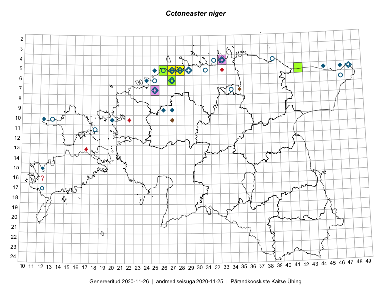

Cotoneaster niger
Uuendatud: 2016-12-01
Kaardile koondatud taksonid: Cotoneaster niger (Wahlb.) Fr.

Kaart põhineb 11 kirjel.
Viited andmebaasikirjetele
- Rein Kalamees: 2015-06-05: 05-32: ala
- Rein Kalamees, Kersti Püssa: 2015-06-01: 06-31: ala
- Erkki Otsman, Sergei Smirnov: 2015-07-08: 05-27: GPS punkt
- Erkki Otsman, Sergei Smirnov: 2015-07-08: 05-27: GPS punkt
- Erkki Otsman, Sergei Smirnov: 2015-07-08: 05-27: GPS punkt
- Erkki Otsman, Sergei Smirnov: 2015-07-08: 05-27: GPS punkt
- Erkki Otsman, Sergei Smirnov: 2015-06-29: 05-28: GPS punkt
- Erkki Otsman, Sergei Smirnov: 2015-06-29: 05-28: GPS punkt
- Kaili Orav, Silvia Pihu: 2015-07-21: 05-40: ala
- Tiit Hallikma, Tõnu Ploompuu: 2016-07-26: 05-42: GPS punkt
- Kadi-Liis Kesler: 2015-05-30: 05-27: ala